Physical Model
Masterplan Model
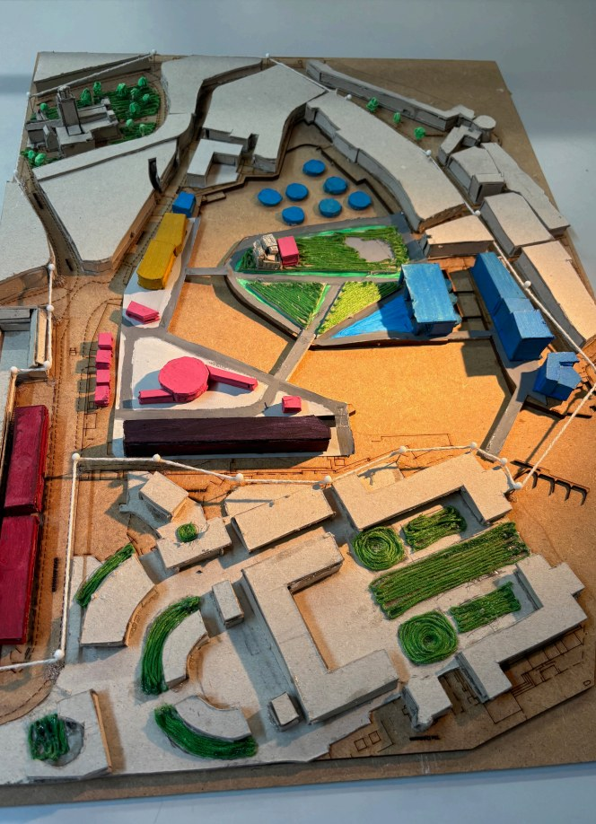
Overhead
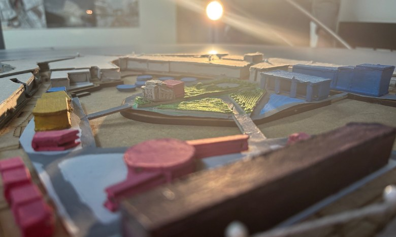
Low Angle
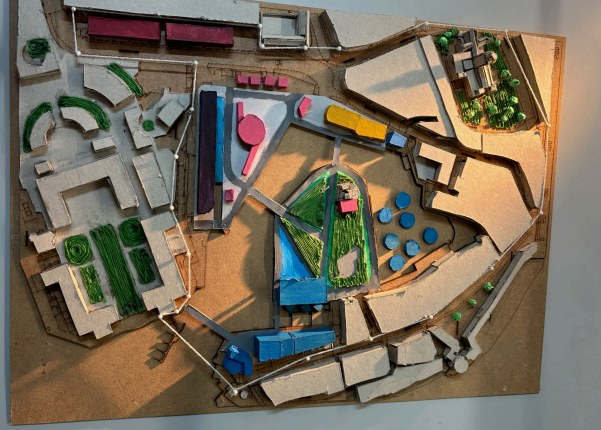
Wide View
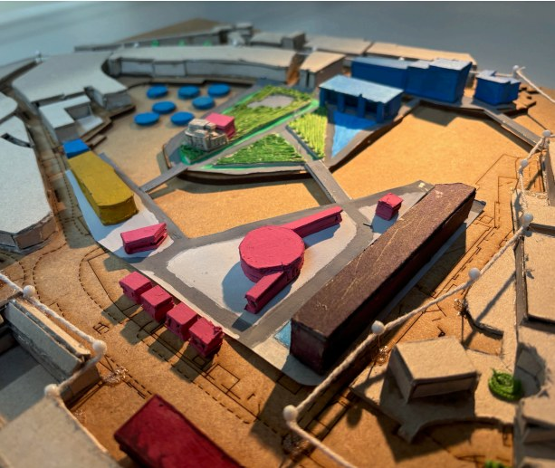
Close Detail

Side Angle
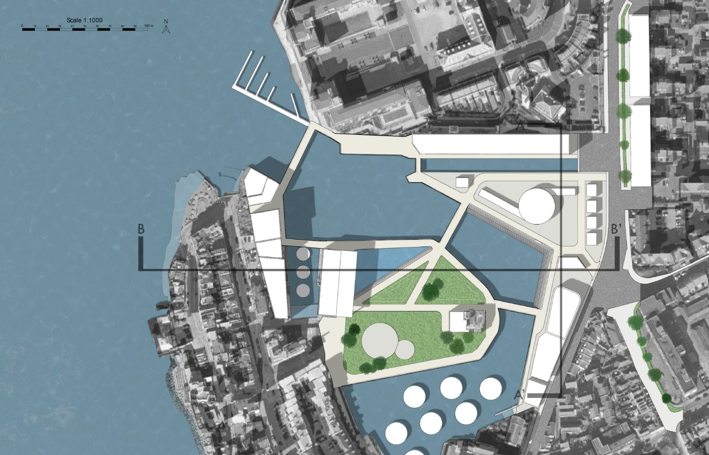
Major Project · Phase 1 · Team Masterplan
Overview
Phase 1 of the major project, completed as a group of four - Cason Peng, Jess Blackhurst, Eduardo Maldonado, and myself. The project proposes a new urban village on the Old Portsmouth waterfront at Spice Island, centred on research, education, and public life.
The programme covers a research centre, exhibition and archive space, community centre, market, residential units, and a network of green public space and waterfront walkways. A new pedestrian bridge links the residential areas and research complex, strengthening the connection between the waterfront and the wider city.
Flood resilience is central to the design. The main green space doubles as a temporary water retention zone, with an adjustable basin to regulate storage during extreme weather. Marine algae cultivation units in the adjacent water body serve wave attenuation, carbon sequestration, and biomass production. At ground floor level, marine grade concrete handles flood exposure; mass timber takes over on upper floors, alongside green roofs throughout.
The proposal directly informed the Phase 2 solo building. The site, programme, and environmental ambition established here became the foundation for the Meridian.
This page documents group work completed as part of the Major Project brief. My contributions were the conceptual sketches and collage, building heights analysis, materiality strategy, and digital model renders. Other drawings and diagrams are credited to team members in the booklet.
This project was about zooming out - moving from a single building to an urban scale, and from working alone to leading a group. I took on an organising role: assigning team members to different aspects of the masterplan, keeping ideas cohesive, making sure everything meshed. It was the first time I had the opportunity to work on both a building and its surrounding context together, thinking about a project's place in a wider urban fabric rather than treating it as an isolated object. I developed significantly as a collaborator and leader through it, and it gave me a much broader sense of what architecture can do at scale.
Concept & Narrative
The historic dockyard is like a machine that breeds machines - a place where function is paramount, where Portsmouth's relationship with the ocean was always one of extraction and warfare. We take pride in what came out of that place, but that is not where our pride in the ocean should stop.
The project's central image is a sapling growing from the centre of The Point, roots spreading toward the sea. Lord Nelson and the battleship are still there - the military presence, the memorials - but something new is growing from the same ground. The water flooding the square represents both the risk of rising sea levels and Portsmouth's deep, ongoing link with the sea.
Where the dockyard found conflict in the past, this village finds hope in the future. The aim is an antithesis to the dockyard: somewhere that treats the ocean not as something to be taken advantage of, but as something to be worked with, understood, and enjoyed. Research, education, and public enrichment in place of uniformity and militaristic function.
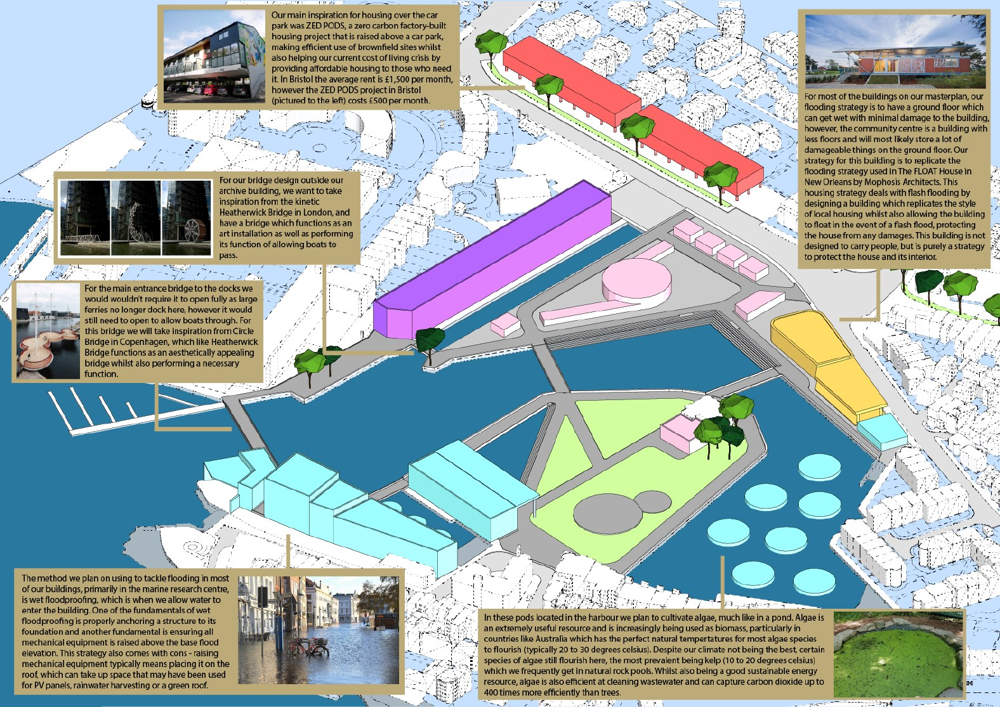
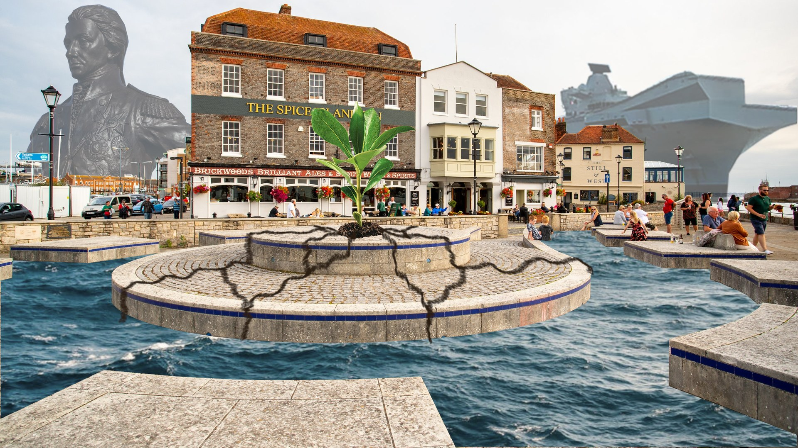
Narrative Collage - Military Past / Environmental Future
Masterplan
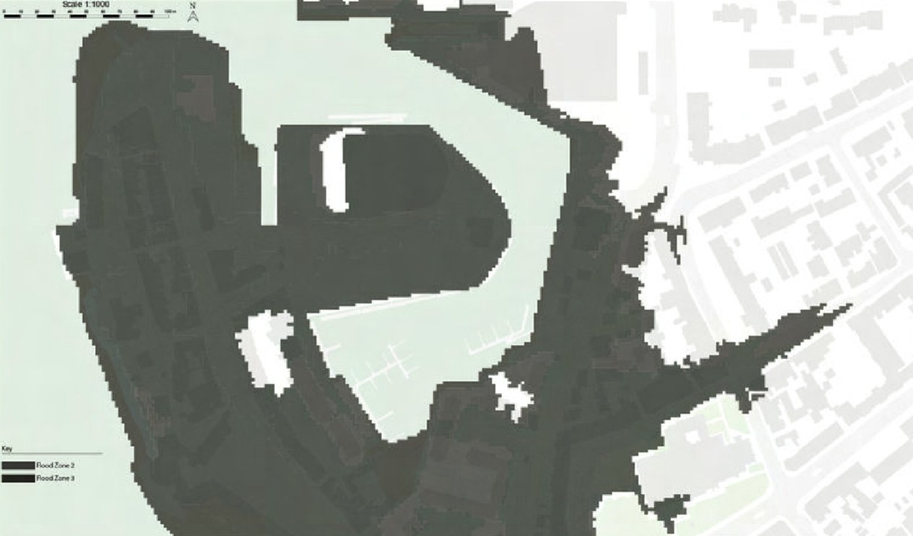
Flood Risk
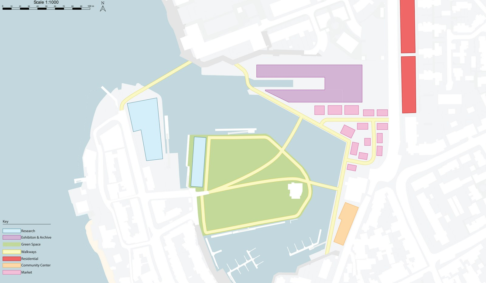
Proposed Uses
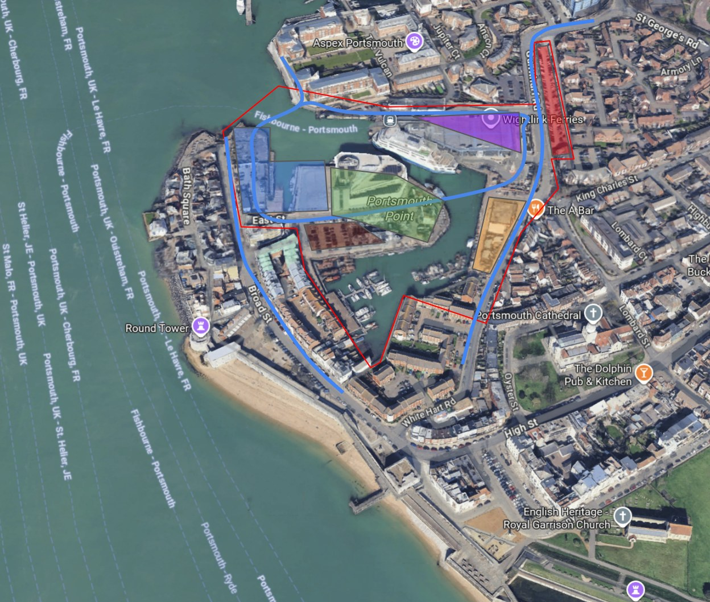
Proposed Site Plan
Masterplan Aerial
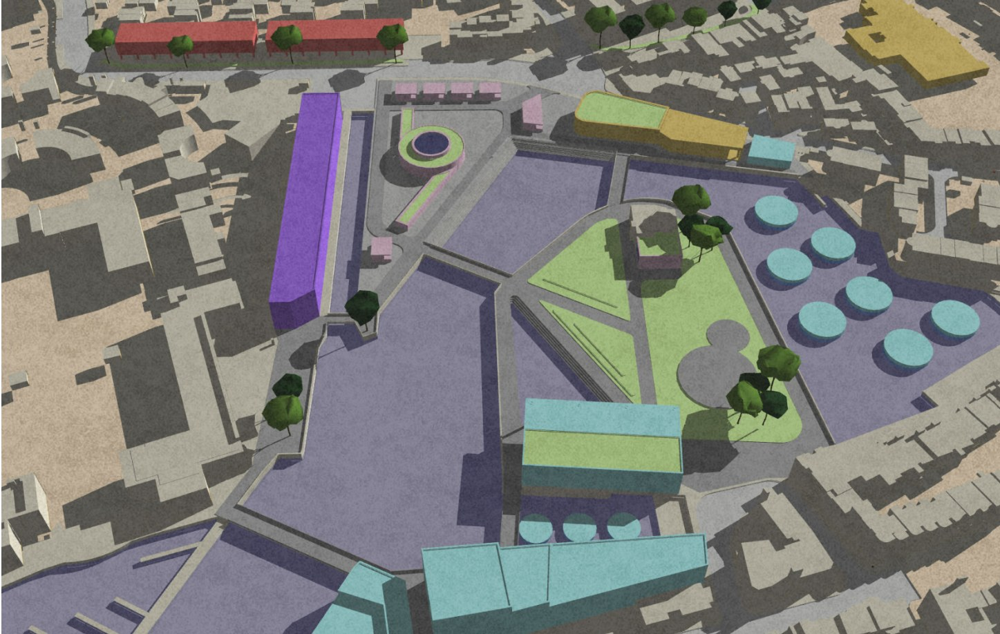
Aerial Render
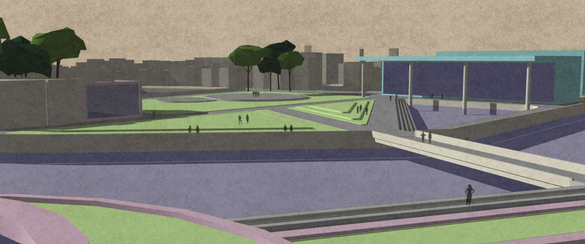
Waterfront Promenade
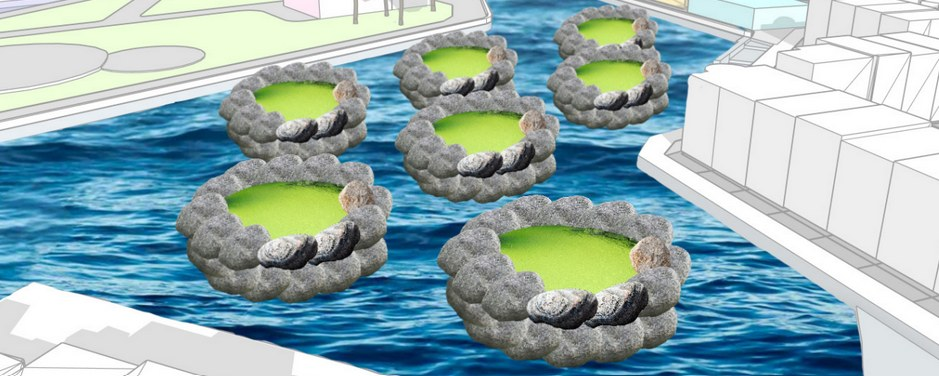
Floating Reefs and Canal Edge
Technical Drawings
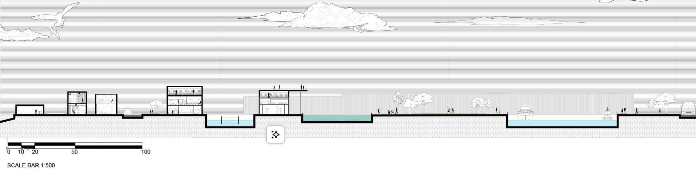
Section A
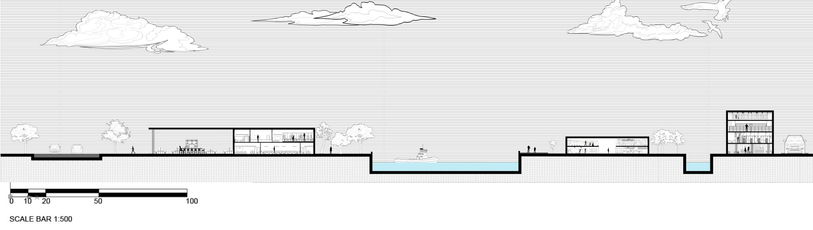
Section B
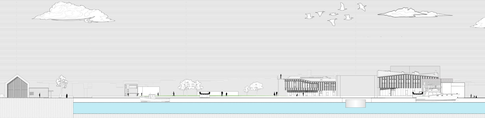
Section C
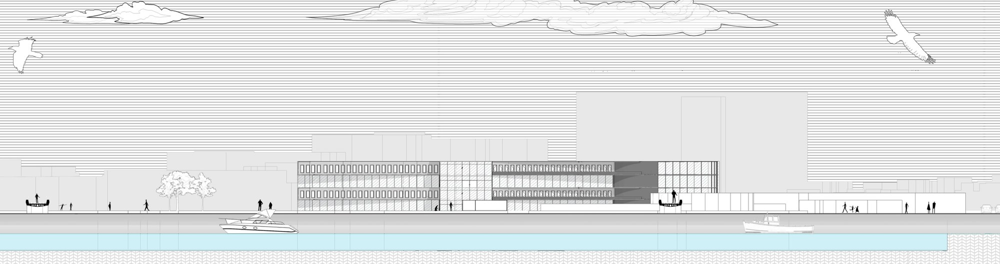
Section D
Physical Model

Overhead

Low Angle

Wide View

Close Detail
Side Angle
Phase 2
The Meridian Building grew directly from the masterplan - taking the site, programme, and civic ambition of Phase 1 and resolving it at architectural scale.
View Phase 2 Project